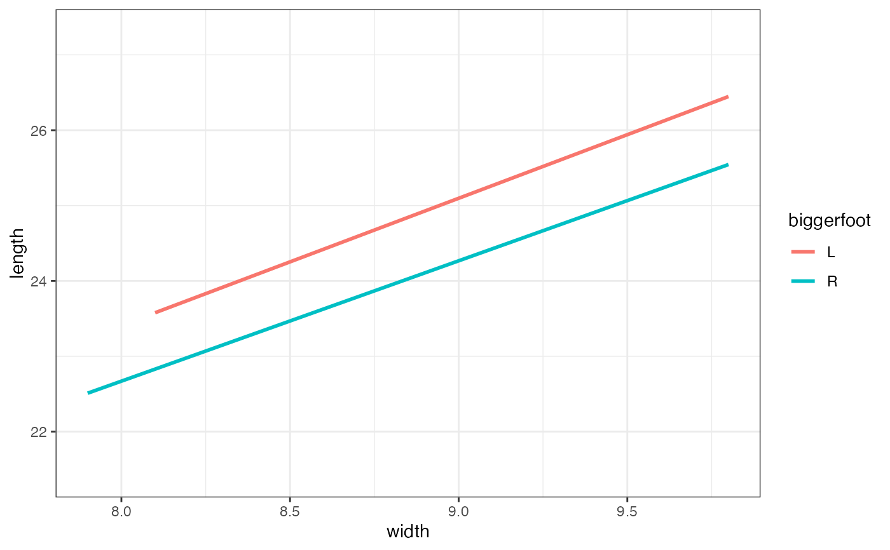
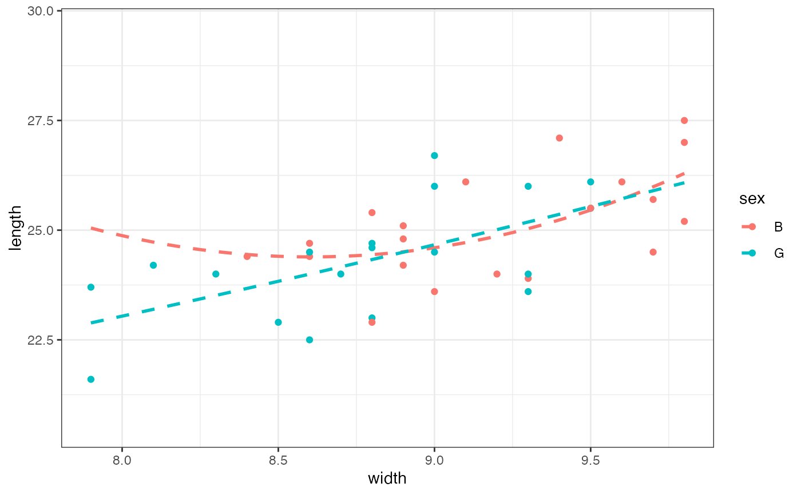
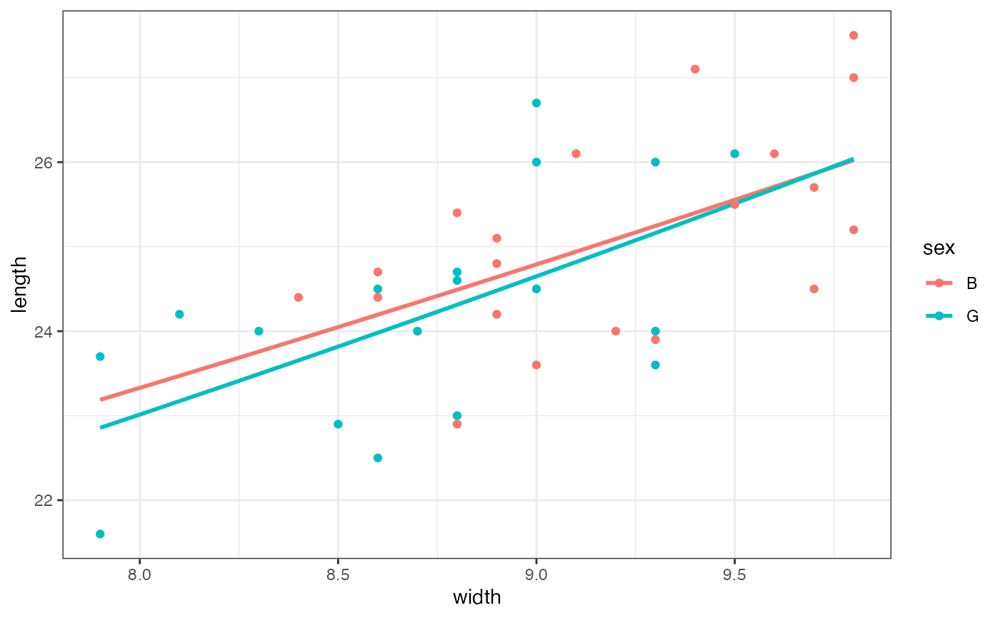
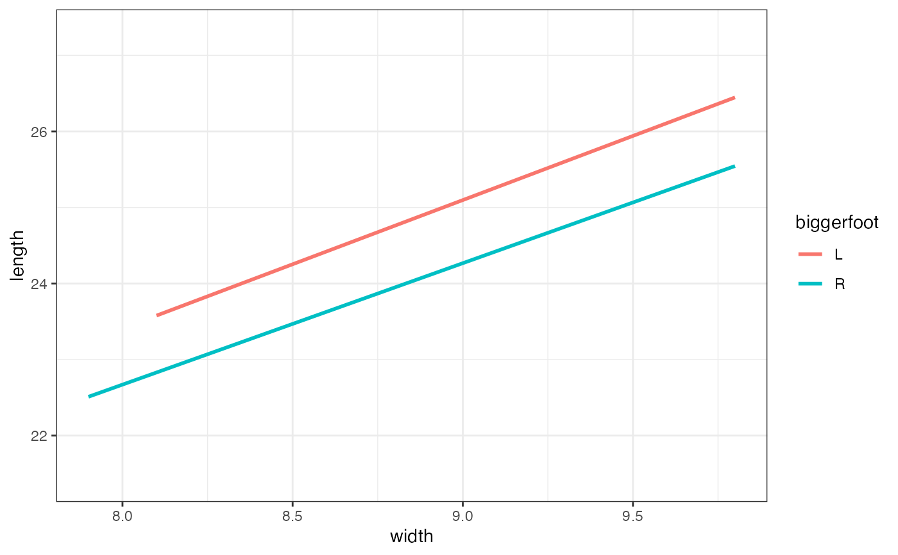
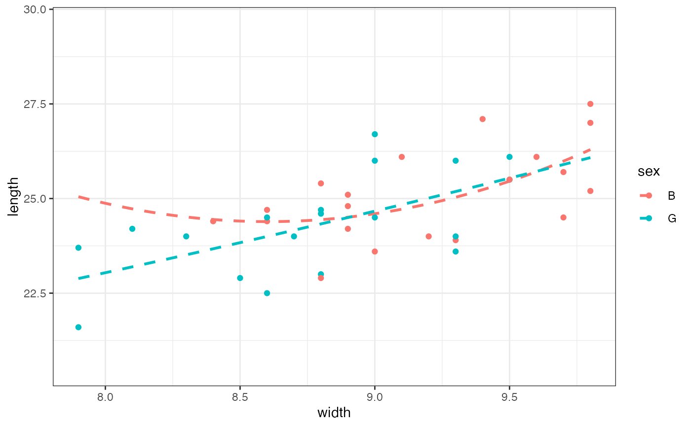
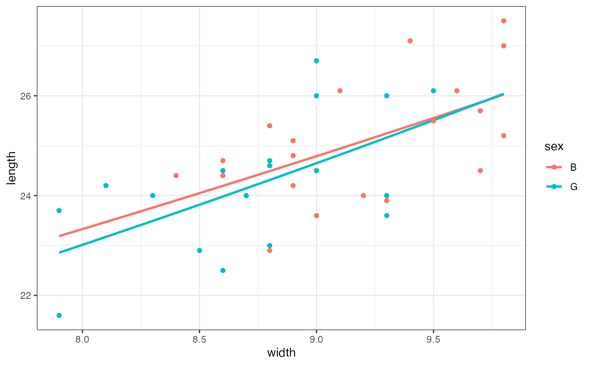

LOESS and linear model smoothers in ggformula.
gf_smooth(
object = NULL,
gformula = NULL,
data = NULL,
...,
method = "auto",
formula = y ~ x,
se = FALSE,
method.args,
n = 80,
span = 0.75,
fullrange = FALSE,
level = 0.95,
xlab,
ylab,
title,
subtitle,
caption,
geom = "smooth",
stat = "smooth",
position = "identity",
show.legend = NA,
show.help = NULL,
inherit = TRUE,
environment = parent.frame()
)
gf_lm(
object = NULL,
gformula = NULL,
data = NULL,
...,
alpha = 0.3,
lm.args = list(),
interval = "none",
level = 0.95,
fullrange = TRUE,
xlab,
ylab,
title,
subtitle,
caption,
geom = "lm",
stat = "lm",
position = "identity",
show.legend = NA,
show.help = NULL,
inherit = TRUE,
environment = parent.frame()
)Arguments
- object
When chaining, this holds an object produced in the earlier portions of the chain. Most users can safely ignore this argument. See details and examples.
- gformula
A formula with shape
y ~ x. Faceting can be achieved by including|in the formula.- data
A data frame with the variables to be plotted.
- ...
Additional arguments. Typically these are (a) ggplot2 aesthetics to be set with
attribute = value, (b) ggplot2 aesthetics to be mapped withattribute = ~ expression, or (c) attributes of the layer as a whole, which are set withattribute = value.- method
Smoothing method (function) to use, accepts either
NULLor a character vector, e.g."lm","glm","gam","loess"or a function, e.g.MASS::rlmormgcv::gam,stats::lm, orstats::loess."auto"is also accepted for backwards compatibility. It is equivalent toNULL.For
method = NULLthe smoothing method is chosen based on the size of the largest group (across all panels).stats::loess()is used for less than 1,000 observations; otherwisemgcv::gam()is used withformula = y ~ s(x, bs = "cs")withmethod = "REML". Somewhat anecdotally,loessgives a better appearance, but is \(O(N^{2})\) in memory, so does not work for larger datasets.If you have fewer than 1,000 observations but want to use the same
gam()model thatmethod = NULLwould use, then setmethod = "gam", formula = y ~ s(x, bs = "cs").- formula
Formula to use in smoothing function, eg.
y ~ x,y ~ poly(x, 2),y ~ log(x).NULLby default, in which casemethod = NULLimpliesformula = y ~ xwhen there are fewer than 1,000 observations andformula = y ~ s(x, bs = "cs")otherwise.- se
Display confidence interval around smooth? (
TRUEby default, seelevelto control.)- method.args
List of additional arguments passed on to the modelling function defined by
method.- n
Number of points at which to evaluate smoother.
- span
Controls the amount of smoothing for the default loess smoother. Smaller numbers produce wigglier lines, larger numbers produce smoother lines. Only used with loess, i.e. when
method = "loess", or whenmethod = NULL(the default) and there are fewer than 1,000 observations.- fullrange
Should the fit span the full range of the plot, or just the data?
- level
Level of confidence interval to use (0.95 by default).
- xlab
Label for x-axis. See also
gf_labs().- ylab
Label for y-axis. See also
gf_labs().- title, subtitle, caption
Title, sub-title, and caption for the plot. See also
gf_labs().- geom
A character string naming the geom used to make the layer.
- stat
A character string naming the stat used to make the layer.
- position
Either a character string naming the position function used for the layer or a position object returned from a call to a position function.
- show.legend
A logical indicating whether this layer should be included in the legends.
NA, the default, includes layer in the legends if any of the attributes of the layer are mapped.- show.help
If
TRUE, display some minimal help.- inherit
A logical indicating whether default attributes are inherited.
- environment
An environment in which to look for variables not found in
data.- alpha
Opacity (0 = invisible, 1 = opaque).
- lm.args
A list of arguments to
stats::lm().- interval
One of
"none","confidence"or"prediction".
Value
a gg object
Specifying plot attributes
Positional attributes (a.k.a, aesthetics) are specified using the formula in gformula.
Setting and mapping of additional attributes can be done through the
use of additional arguments.
Attributes can be set can be set using arguments of the form attribute = value or
mapped using arguments of the form attribute = ~ expression.
In formulas of the form A | B, B will be used to form facets using
facet_wrap() or facet_grid().
This provides an alternative to
gf_facet_wrap() and
gf_facet_grid() that is terser and may feel more familiar to users
of lattice.
Evaluation
Evaluation of the ggplot2 code occurs in the environment of gformula.
This will typically do the right thing when formulas are created on the fly, but might not
be the right thing if formulas created in one environment are used to create plots
in another.
See also
Examples
gf_smooth()
#> gf_smooth() uses
#> * a formula with shape y ~ x.
#> * geom: smooth
#> * stat: smooth
#> * key attributes: method = "auto", formula = y ~ x, se = FALSE, method.args,
#> n = 80, span = 0.75, fullrange = FALSE,
#> level = 0.95
#>
#> For more information, try ?gf_smooth
gf_lm()
#> gf_lm() uses
#> * a formula with shape y ~ x.
#> * geom: lm
#> * stat: lm
#> * key attributes: alpha = 0.3, lm.args = list(), interval = "none", level =
#> 0.95, fullrange = TRUE
#>
#> For more information, try ?gf_lm
gf_smooth(births ~ date, color = ~wday, data = mosaicData::Births78)
#> `geom_smooth()` using method = 'loess'
 gf_smooth(births ~ date,
color = ~wday, data = mosaicData::Births78,
fullrange = TRUE
)
#> `geom_smooth()` using method = 'loess'
#> Warning: Removed 16 rows containing missing values (geom_smooth).
gf_smooth(births ~ date,
color = ~wday, data = mosaicData::Births78,
show.legend = FALSE, se = FALSE
)
#> `geom_smooth()` using method = 'loess'
gf_smooth(births ~ date,
color = ~wday, data = mosaicData::Births78,
show.legend = FALSE, se = TRUE
)
#> `geom_smooth()` using method = 'loess'
gf_lm(length ~ width,
data = mosaicData::KidsFeet,
color = ~biggerfoot, alpha = 0.2
) %>%
gf_point()
gf_lm(length ~ width,
data = mosaicData::KidsFeet,
color = ~biggerfoot, fullrange = FALSE, alpha = 0.2
)

gf_point()
#> gf_point() uses
#> * a formula with shape y ~ x.
#> * geom: point
#> * key attributes: alpha, color, size, shape, fill, group, stroke
#>
#> For more information, try ?gf_point
gf_lm(length ~ width,
color = ~sex, data = mosaicData::KidsFeet,
formula = y ~ poly(x, 2), linetype = "dashed"
) %>%
gf_point()

gf_lm(length ~ width,
color = ~sex, data = mosaicData::KidsFeet,
formula = log(y) ~ x, backtrans = exp
) %>%
gf_point()

gf_lm(hwy ~ displ,
data = mpg,
formula = log(y) ~ poly(x, 3), backtrans = exp,
interval = "prediction", fill = "skyblue"
) %>%
gf_lm(
formula = log(y) ~ poly(x, 3), backtrans = exp,
interval = "confidence", color = "red"
) %>%
gf_point()
gf_smooth(births ~ date,
color = ~wday, data = mosaicData::Births78,
fullrange = TRUE
)
#> `geom_smooth()` using method = 'loess'
#> Warning: Removed 16 rows containing missing values (geom_smooth).
gf_smooth(births ~ date,
color = ~wday, data = mosaicData::Births78,
show.legend = FALSE, se = FALSE
)
#> `geom_smooth()` using method = 'loess'
gf_smooth(births ~ date,
color = ~wday, data = mosaicData::Births78,
show.legend = FALSE, se = TRUE
)
#> `geom_smooth()` using method = 'loess'
gf_lm(length ~ width,
data = mosaicData::KidsFeet,
color = ~biggerfoot, alpha = 0.2
) %>%
gf_point()
gf_lm(length ~ width,
data = mosaicData::KidsFeet,
color = ~biggerfoot, fullrange = FALSE, alpha = 0.2
)

gf_point()
#> gf_point() uses
#> * a formula with shape y ~ x.
#> * geom: point
#> * key attributes: alpha, color, size, shape, fill, group, stroke
#>
#> For more information, try ?gf_point
gf_lm(length ~ width,
color = ~sex, data = mosaicData::KidsFeet,
formula = y ~ poly(x, 2), linetype = "dashed"
) %>%
gf_point()

gf_lm(length ~ width,
color = ~sex, data = mosaicData::KidsFeet,
formula = log(y) ~ x, backtrans = exp
) %>%
gf_point()

gf_lm(hwy ~ displ,
data = mpg,
formula = log(y) ~ poly(x, 3), backtrans = exp,
interval = "prediction", fill = "skyblue"
) %>%
gf_lm(
formula = log(y) ~ poly(x, 3), backtrans = exp,
interval = "confidence", color = "red"
) %>%
gf_point()
 clotting <- data.frame(
u = c(5,10,15,20,30,40,60,80,100),
lot1 = c(118,58,42,35,27,25,21,19,18),
lot2 = c(69,35,26,21,18,16,13,12,12))
gf_point(lot1 ~ u, data = clotting) %>%
gf_smooth(formula = y ~ log(x), method = "glm",
method.args = list(family = Gamma))
clotting <- data.frame(
u = c(5,10,15,20,30,40,60,80,100),
lot1 = c(118,58,42,35,27,25,21,19,18),
lot2 = c(69,35,26,21,18,16,13,12,12))
gf_point(lot1 ~ u, data = clotting) %>%
gf_smooth(formula = y ~ log(x), method = "glm",
method.args = list(family = Gamma))
 gf_point(lot2 ~ u, data = clotting) %>%
gf_smooth(formula = y ~ log(x), color = "red", method = "glm",
method.args = list(family = Gamma))
gf_point(lot2 ~ u, data = clotting) %>%
gf_smooth(formula = y ~ log(x), color = "red", method = "glm",
method.args = list(family = Gamma))